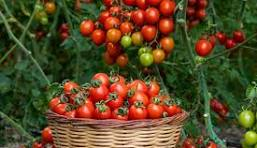
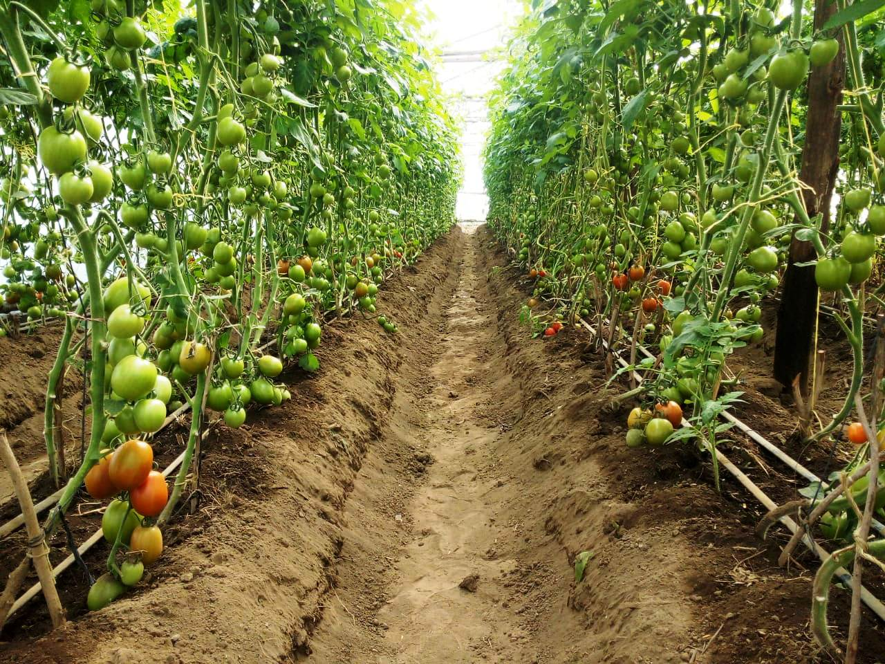

Tomato Production
Usually covers around 1 acres of the farm per season.

- Growth Duration: 60 - 85 days from transplanting.
- Varieties: We mainly grow Kilele F1.Other varieties include Rio Grande,Cal J and Anna F1.
- Soil Type: Fertile, Well-Drained Loam,pH 6.0-6.8.
- Spacing: 60cm between rows,45cm between plants.
- Fertilizer:DAP at planting, CAN and foliar feeds during growth.
- Watering: Consistent and moderate;avoid overhead irrigation.
- Yield: 10-30 tons per acre.
Farm Gallery & Harvesting


